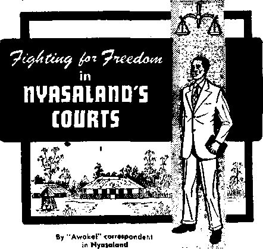

THE MISSION OF THIS JOURNAL
News sources that are able to keep you awake to the vital issues of our times must be unfettered by censorship and selfsh interests. “Awake 1” has no fetters. It recognizes facts, faces facts, is free to publish facts. It is not bound by political ambitions or obligations; it Is unhampered by advertisers whose toes must not be trodden on; it is unprejudiced by traditional creeds. This Journal keeps itself free that it may speak freely to you. But it does not abuse its freedom. It maintains integrity to truth.
“Awake!” uses the regular news channels, but is not dependent on ti^m. Its own correspondents are on all continents, in scores of nations. From the four corners of the earth their uncensored, on-the-scenes reports come to you through these columns. This Journal’s viewpoint is not narrow, but is international. It is read in many nations, in many languages, by persons of all ages. Through its pages many fields or knowledge pass in review—government, commerce, religion, history, geography, science, social conditions, natural wonders—why, its coverage is as broad as the earth and as high as the heavens.
“Awake I” pledges itself to righteous principles, to exposing hidden foes and subtle dangers, to championing freedom for all, to comforting mourners and strengthening those disheartened by the failures of a delinquent world, reflecting sure hope for the establishment of a righteous New World.
Get acquainted with “Awake!” Keep awake by reading “Awake!”
Published Semimonthly by WATCHTOWER BIBLE AND TRACT SOCIETY OF NEW YORK, INC.
117 Adams Street, Brooklyn 1, New York, U. S. A. N. H, Knobs, President Ge a nt Surrea. Secretary
Printing this issue: 2,300,000
Other f images in which "Awits!" is published: Semimonthly—Afrikaans, Finnish, Frendi, Orman, Greek, HojJandiEh, It Ulan, Norwegian, Spanish, iiwediih, Monthly—Dacfalr, Japaae&c, P&Hisubw, Ukrainian,
Yearly aubserltHton rates Off!Mi for semimonthly editions
Amtrtet, ILS., 11? Attars St, Brooklyn 1, N.Y. Si Autnlta, 11 record Rd., mUihelr!, NSW, 8/-Canfctfu Bridfleland Aft., Tbronlo 10, OnL $1 Enilond, 34 Craven Terrace, London W, 3 7/-
Kew Zealand, fl.F.O. Box 30, WelUnctea, C. 1 ?/-South Africa, Private Baz, Elandsfonteiti, Tv J. "/■
Monthly adltim eoit half the above ratal.
Five cents a copy
Remittances should be sent tn offiee in your (joutt-Lry In compliance with result lions to suar&tilee safe delivery of money- Remittances are accepted at Brooklyn from countries where no office fa located, by International money order only. SubBcr-lpHon rate* In different countries are here elated In local currency. Notice ri expiration (with renewal blank i Is sent at least two issitra Wore subscription ex plrts. Chartie of address when stmt to cur office may be expected effcetlve within one mcnlb. Send your old as well ag new address.
Entered as second-cIam matter at BruokJjn, N.Y.
Printed In U.S.A.
CONTENTS
How the Bible Solves Lite’s Problems
The St. Lawrence Seaway Project
Attempt at Revolution Smothered
Jungle Housewife but Always a Woman
Fighting for Freedom in Nyasaland’s
“Your Word Is Truth"
The New Heathendom in Christendom 25
Jehovah’s Witnesses Preach in All
PAGAN ORIGIN
PROBABLY few people who see the astrological charts and forecasts In stores, on newsstands and in newspapers know the origin of astrology or the utter paganism of which it is a part. Astrology, of course, is the belief that the stars and planets and their movement affect the lives and destiny of men and nations. What could prompt such a strange belief?
The ancient Babylonians believed that the sun, moon and planets were gods, and they thought that the movement of these heavenly bodies represented the activity of the gods. The gods, they believed, greatly affected their welfare, and so the people believed that the movement of the heavenly bodies more or less predestined human lives.
Yet people today who would scoff at the ancient pagan idea that Mercury, Venus and Mars were gods still follow the ancient belief in astrology that this belief in star gods spawned. The Encyclopedia Americana says under "Astrology” that this belief remains "a means of livelihood to many charlatans who prey upon the ignorant classes in all countries.”—Volume 2, pages 452, 453.
Astrology’s outright pagan origin is shown by another encyclopedia, the Britannica, which says: “The study of astrology and the belief in it, as part of astronomy, is found in
a developed form among the ancient Babylonians, and, directly or indirectly through the Babylonians, it spread to Greece about the middle of the 4th century B.C., and reached Rome before the opening of the Christian era.”—Volume 2, page 575.
Since Jehovah, the true God, commanded complete separateness from the pagan worship of the ancient Babylonians, Greeks and Romans, it is clear that the Christian must pointedly shun any connection whatsoever with astrology. The Babylonians, whom Jehovah had condemned, were taunted by God through his prophet Isaiah: “Thou art wearied in the multitude of thy counsels: let now the astrologers, the stargazers, the monthly prognosticators, stand up, and save thee from the things that shall come upon thee.” They could not do so.—Isaiah 47:13, Am. Stan. Ver.
Jehovah’s command to his people was entirely different. They were told to beware of the course that would lead them to worship such objects, and not to “raise your eyes to the heavens and indeed see the sun and the moon and the stars, all the army of the heavens, and certainly get seduced and bow down to them and serve them,” which is just what the pagans did. —Deuteronomy 4:19, New World Trans.
Which course do you follow regarding astrology, the course of the pagans whom God condemned, or the course of true worshipers, as outlined in God’s Word?
O ONE has to be told that we face problems today, but the more
safes fifefyrafflems
:’OU
r A major reason for the problems of modern-day living is that the sure guide has been rejected.
What solutions does it offer, and cun they really be applied now?
There are three major reasons why the world faces the problems it does today. The first is that it has discarded God’s Word. The second is that wicked spirit creatures are
person knows the more he rec- ' leading the world in the wrong
ognizes the extent of those problems and way. The third is that even honest men do can cope better with them.
Crime and delinquency increase. Morals
not have the power to overcome such a wicked rule.
worsen. Selfishness and greed expand. The dread of a third world war hangs ominously over the globe. Dope peddling and juvenile gangs are a major menace, and family relationships become more difficult.
If these problems seem minor to you, they certainly do not to the 16,000 Americans who, even in these prosperous times, take their lives each year—committing suicide because they see no way out of either real or imagined difficulties.
These four logical questions come to mind: Why does the world face such problems? How can the Bible solve them? Will its solutions really work now? Whatshould you do about it? Certainly everyone would like to have these questions answered. Let us consider them in order.
Regarding the first reason, a world that has discarded God’s Word is like a ship without a rudder. Caught in a violent storm, near rocky shoals, such a ship would indeed be in difficult circumstances. The world is in that situation today. Modernists have scoffed at the Bible’s principles and ridiculed its authenticity. Others who claim to believe the Bible rarely read it and know little of what it teaches. Without this guide, however, they cannot direct their course properly and avoid the treacherous shoals that cause the shipwreck of both lives and faith.
Regarding the second reason, the Bible leaves no doubt that actual wicked spirit creatures are in control. It says: “We know we originate with God, but the whole world is lying in the power of the wicked one." Again: “We have a fight, not against blood and flesh, but against. .. the wicked spirit forces in the heavenly places.” Still further: “The god of this system of things has blinded the minds of the unbelievers, that the illumination of the glorious good news about the Christ, who is the image of God, might not shine through." This is not a small-scale blinding, but the Bible tells us that “the original serpent, the one called Devil and Satan,” “is misleading the entire inhabited earth.” Under such a leadership, problems could be expected only to worsen, as they have been doing. —1 John 5:19; Ephesians 6:12; 2 Corinthians 4:4; Revelation 12:9, New World Trans.
Regarding the third reason why such problems are faced, even men of honest heart cannot destroy this wicked enslaver, removing him from his position of rulership over mankind. The prophet Jeremiah long ago wrote: “Behold, the false pen of the scribes hath wrought falsely. The wise men are put to shame, they are dismayed and taken: lo, they have rejected the word of Jehovah; and what manner of wisdom is in them?” Only in God’s way is there any solution.—Jeremiah 8:8, 9, Am. Stan. Ver.
But God does provide that solution. Since he provided the food, minerals and other natural resources that man needs, it is not logical to think that he would not also have provided for our even more important mental and spiritual needs. He has provided for them. The psalmist showed this when he asked; “Wherewithal shall a young man cleanse his way?” and answered: “By taking heed thereto according to thy word.” —Psalm 119:9.
What does God’s cleansing Word say about our modern-day problems? Most of our problems fall into one of four fields. They concern either our worship, our relationship with our government, our relationships with other people or our own personal conduct. The Bible deals with each of these fields.
Solution. Regarding Worship
Regarding worship the Bible says specifically: “For you must not bow down to another god, because Jehovah is exclusively devoted to his name. He is a God exacting exclusive devotion.” (Exodus 34:14, New World Trans.) “Another god" could be any of many things: an image, an idol, Satan the false god of this world, or even one’s money or wealth, or his own or someone else’s exalted position over other people. Following this simple principle of rejecting all such other gods would eliminate false worship, materialism, greed, selfishness and even much of the world’s crime. How many of today’s problems this simple Bible principle would solve!
The Bible further says regarding our worship that we should learn God’s instructions, be firmly devoted to him and carefully obey his commandments. As Jesus said, we should say and mean: “Look! I am come ... to do your will, O God." We should obey the command: “You must love Jehovah your God with your whole heart and with your whole soul and with your whole mind.” We must be obedient and have part in preaching the truth to others. Of Jesus we read: “Although he was a Son, he learned obedience from the things he suffered, and after he had been made perfect he became responsible for everlasting salvation to all those obeying him.”—Hebrews 10:7; Matthew22:37; Hebrews 5:8, 9, New World Trans.
Following these Biblical instructions solves the problem of right worship and really does lead to God’s favor and everlasting life.
The second problem deals with our relationship to the government—what we should do about the state. Jesus stated this clearly and simply: “Pay back Caesar’s things to Caesar, but God’s things to God.” What are Caesar’s things? Our taxes, obedience to the laws, respect for worldly rulers, and the like. Obedience to this command therefore would eliminate delinquency, crime and violence, for all such things are against the law. Certainly obedience tp it would solve many of today’s problems!—Mark 12:17, New World Trans.
But what about in totalitarian lands, and in other places where Christians are commanded to disobey God? Should we worship the state? attributing salvation to it instead of to God? Do we owe it our lives in wars of aggression? No, because Jesus added: Pay back “God’s things to God.” What are God’s things? Our worship, the source of salvation and our lives belong to him. Obedience to this simple rule would have eliminated the world’s wars. World War II, for example, would never have broken out in Europe had the people and their religious leaders held to this Bible principle. And what an astounding number of modem-day problems that would have solved!
The third problem of modern-day living concerns our relationship with other persons,. One short Bible statement sums up the whole matter; “All things, therefore, that you want men to do to you, you also must likewise do to them; this, in fact, is what the Law and the Prophets mean.” —Matthew 7:12, New World Trans.
“Oh, yes, don’t do to anyone else what you wouldn’t want him to do to you,” many people say. But that is not what the scripture says. The Biblical statement is positive, not negative. It does not merely say that you must not hurt the other man, but that you must initiate the doing of good. You should do the good to him before he does it to you. Following this positive command certainly would eliminate many of life's problems today.
By following this positive command you would already be refraining from other things the Bible forbids. You would avoid slander, backbiting, thoughtless and unkind remarks, uninvited meddling in others’ affairs and malicious criticism of another’s false step. You would avoid these things because you want others to avoid them where you are concerned. Further, you would show the honesty, reliability and consideration for others that the Bible commands of all its followers, and you would be obeying even its command to render really honest service to your employer, not taking pay for work not done, but bj your reliability adorning “the teaching oi our Savior, God, in all things.” By following such Biblical instructions it is amazing how many more of life’s problems art actually solved—Titus 2:10, New Work Trans.
Regarding Personal Conduct
The fourth problem concerns our per sonal conduct. Here, too, the Bible ha much to say. It condemns all excesses ii food, drink, and the like, and says we mus be clean in thoughts, words and action. I forbids all kinds of sexual immorality which it says should "not even be men tioned among you, just as it befits holy people, neither shameful conduct nor foolish talking nor obscene jesting, things which are not becoming.”—Ephesians 5:3, 4, New World Trans.
That does not mean you cannot tell a joke, or must look mournful all the time, but it does mean that you cannot tell a dirty one—for provocative filth can lead to vile practices.
Yet some people who will not talk about improper things will do them. Not only must they not be talked about, they must not be done. The apostle wrote: "What! Do you not know that unrighteous persons will not inherit God’s kingdom? . . . And yet that is what some of you were. But you have been washed clean, but you have been sanctified, but you have been declared righteous in the name of our Lord Jesus Christ and with the spirit of our God.” So the Bible principle is, if you have been guilty of such things, change!—1 Corinthians 6:9, 11, New World Trans.
How does the Bible solve the personal problem of family obligations, eliminating broken homes, divorce, hardship and even delinquency? It says simply: “You wives, be in subjection to your husbands, as it is becoming in the Lord. You husbands, keep on loving your wives and do not be bitterly angry with them. You children, be obedient to your parents in everything, for this is well-pleasing in the Lord. You fathers, do not be exasperating your children, so that they do not become downhearted.”—Co-lossians 3:18-21, New World Trans.
Now, what part of that text do you remember? If you are really interested in applying the Bible’s principles, as you should be, you will remember the part that applies to you personally, rather than the part that applies to someone else. It is the failure to apply this instruction to one’s own life that is what is wrong with so many families today. But when this instruction is taken seriously by all involved, when the husband is the head of the home, when children are taught obedience, and when love is the binding tie, then there is no marital infidelity, no broken homes, no divorces and no delinquent children!
Regarding children the Bible says: "Train up a child in the way he should go: and when he is old, he will not depart from it.” This does not say you can shunt him off to Sunday school, or to some other place of religious instruction, and then forget him. Rather, it means that the responsibility rests upon the parent himself, and that he must have sufficient knowledge to teach his own child.—Proverbs 22:6.
Discipline is important: “Foolishness is bound in the heart of a child; but the rod of correction shall drive it far from him.” But discipline is not enough. The right example and family love in God’s service are also required. God's people were told: “And these words that I am commanding you today must prove to be on your heart, and you must inculcate them in your son and speak of them when you sit in your house and when you walk on the road and when you lie down and when you get up.”—Proverbs 22:15; Deuteronomy 6:6, 7, New World Trans.
When parents really do this, even the problem of delinquency is solved, for they set the right example, teach it to their children, show them its importance and then rejoice with them in the blessings of following this right course.
But do these principles really work? Is the Bible still sound for our day? Most certainly! Those who apply it have found that it really is true that “the word of God is alive and exerts power and is sharper than any two-edged sword.”—Hebrews 4;12, New World Trans.
There is an old saying that the proof of the pudding is in the eating; likewise the strongest proof that these principles really work is the fact that a great number of people really are applying them today. They are a people who follow God’s instructions regarding worship, who follow Jesus’ instructions regarding the state, who apply the Bible’s principles to their honest relationships with others, and who apply that Book’s commands to their own personal conduct, keeping morally, physically and spiritually clean.
“They must be a sad group,” someone might think. But exactly the opposite is true. They are the happiest of people. They have made over their personalities, conforming them to the high principles outlined in God’s Word, thus solving the major problems of modern-day living. They have obeyed the instruction: “You should put away the old personality which conforms to your former course of conduct and which is being corrupted according to his deceptive desires; and should put on the new personality which was created according to God’s will in true righteousness and loving-kindness.” In doing this they have proved the truth of another Bible statement: “If you know these things, happy you are if you do them.”—Ephesians 4:22, 24; John 13:17, New World Trans.
They prove that the truth of the Bible can become one’s motivating power, that he can keep separate from the world’s wrong ways and that he will be far happier for doing so. When one of these people gets into trouble, it is news. The newspaper, and sometimes even its headline, mentions the man’s religion. When someone of another religion, a Baptist, Methodist, Catholic, Jew or other person, gets into trouble that is not news. His religion is not mentioned. But people expect Jehovah’s witnesses to be different. Why? Because the witnesses do apply the Bible’s high principles to their lives. Further, they will allow no unclean person to remain in their organization, but follow the Scriptural instruction: “Remove the wicked man from among yourselves,” and: “You must clear out what is bad from your midst.”—1 Corinthians 5:13; Deuteronomy 17:7, New World Trans.
The result is a happy, united, clean New World society, looking joyfully forward to the time when Jehovah God himself will end earth’s crime and delinquency, its breakdown of morals and the selfishness and greed that mark this generation. Godfearing men will survive that destruction of wickedness. In order to be among them you must conform to Bible principles and really apply God’s specific instructions to your own life now.
This brings us to the last of our four major questions: What should you do about it? Is there any doubt? The Bible truthfully says: “The minding of the flesh means death, but the minding of the spirit means life and peace.” Will you mind the spirit? Will you apply Bible principles to your life, remembering that “happy is the people whose God is Jehovah," and that “where the spirit of Jehovah is, there is freedom”?—Psalm 144:15, Am. Stan, Ver.; Romans 8:6; 2 Corinthians 3:17, New World Trans.
Seek that spirit and freedom. Accept the Bible’s principles. Apply them to your life. By doing so you will live a happier and more enjoyable life now, and you will also be taking the course that leads to everlasting life in happiness in Jehovah’s righteous new world. And no reward could be greater than that!
Katt Mnhil Suddowsi
It has long been known that the rate of marital breakdowns is especially high among actors, actresses and traveling salesmen. Now a new occupation has cropped up to add to Christendom’s dismal picture. Figuring in it to a surprising degree, according to recent divorce records, are bartenders. This is a comparatively recent development. In former days bartenders in general were considered good family men. But that, it seems, was when women were not welcomed in barrooms.
By “Awake!” correspondent in Canada
E ■ ST. LAWRENCE SEAWAYFROJEC
FOR generations men have envisioned the advantages of a deep-draft channel connecting the Atlantic Ocean to North America’s Great Lakes system. To ocean shipping this would provide access to all the many ports on the Great Lakes, indeed to the industrial heart of the United States and Canada.
Each of the cities that dot the shore lines of the five Great Lakes—Superior, Michigan, Huron, Erie and Ontario—has its own special interest in the seaway project. Toronto, for example, now reputed to be one of the fastest-growing cities on the continent, is the commercial and industrial center of Canada’s richest province. Toronto looks to the seaway to spur on its growth still further, to attract more industry and enhance its commercial prestige.
Buffalo, the second-largest city in New York state, looks with speculative pride to the day when ocean-going freight will dock in her now-expanding harbor facilities.
Cleveland, the “city ironworks for a nation,” has more than a passing interest in the St. Lawrence seaway. It could mean her future. At the present time her iron ore comes from the Mesabi, the Gogebic and other mountain ranges of the north central states, and is shipped to Cleveland by way of Duluth and Two Harbors. But these ore deposits are near exhaustion, and Republic Steel estimates that 80 percent of the ore tonnage entering Cleveland will come through the seaway and will originate in the new Ungava ore deposits of Labrador.
Detroit, the automotive capital of the world, anticipates the advantages of the seaway. Today automobiles ride on water to ports on the Great Lakes, but when the seaway is completed they can travel over an open sea road that leads to the Atlantic Ocean and every port in the world.
Chicago speculates that she will be the greatest seaport in the United States of America. Even now the Cal-Sag channel is being extended, which will give Chicago the most extensive inland waterway system on earth. It is projected so that an additional ?10-million industrial development will result, that approximately 900,000 new jobs will he created and another two million new inhabitants will be added to Chicago’s population.
Milwaukee has waited and planned thirty years for the seaway. Its dock facilities are ready. The water front has been facelifted in expectation. Duluth-Superior is the last of the Great Lakes ports. Wheat and iron feed the port only eight months of the year. She looks to the seaway to increase activity and commerce and provide year-round employment.
Duluth-Superior is 1,677 miles from the Atlantic Ocean and 618 feet above it. Lakewise the seaway problems are minimum. The rivers and canals, with their existing locks that connect the various lakes, are capable of handling ocean-going vessels. But problems do occur in the St. Lawrence River between the International Rapids and Montreal—$900,000,000 worth of problems. Let us see some of the engineering problems that warrant the spending of such a huge sum of money.
In Montreal harbor are two bridges that span the river. These bridges have to be raised to permit ocean-type vessels clear passage beneath. The existing locks at La-chine (suburban Montreal) have to be deepened and expanded. These two operations alone will cost $125 million.
Further up the river the world’s largest cofferdam is now holding back the waters of the St. Lawrence River at Barnhart Island, allowing a construction crew to work on the hydro dam and turbine installation. This unit will produce six billion kilowatthours a year and is being shared by Canada and the United States. Additional to this is the Iroquois Dam and locks, the Sault Dam, the Eisenhower Lock and the Grasse River Lock, each consuming gigantic amounts of concrete and reinforcing steel 'and requiring almost endless man-hours of blasting and earthmoving.
The altering of the present river’s course by the construction of dams presented Ontario with a unique problem. Twenty thousand valuable acres are going under water, including the town of Iroquois and eight other villages. Buildings, trees, fences— everything will be leveled. Sixty-five hundred people are being moved to new quarters, which is a story in itself. A monster machine picks up a 240-ton house, as a crab picks up a pebble on the seashore, and gently transports it half a mile to higher ground at the new townsite without spilling a glass of water left on a table or disturbing the fires left in the stoves.
On the humorous side of such sober undertakings is the predicament facing the dogs living in these relocated towns. When the families move, all pets, and dogs in particular, are moved to the original house, which is now in new and totally unfamiliar surroundings. Confused, the dogs eventually wander back to the old neighborhood, but alas the house is gone—a dog’s life, no doubt.
An ingenious model, built by the Ontario Hydro Electric Power Commission, was used as an aid in the engineering problems that faced the Seaway Authority construction crews. This model includes the lower section of the St. Lawrence River, Lake Ontario and the Niagara River, along with Niagara Falls. The model is housed at Islington, Ontario, a suburb of Toronto. The model is a perfect facsimile, reproduced in the exact scale of ten feet of model to one mile of the real thing. Fifty thousand gallons of water flow through the model daily, and again the duplication is exactly to scale, as one cubic foot of water in the model equals half a million cubic feet on the river or lake. Where and when the river rises, so in the model. It is an engineer’s dream to be able to try out his theories on such a model before the show goes on the road.
The model cost half a million dollars to build, but this investment has been paid off many times already. For example, at the site of the Iroquois Dam the model indicated that a dam smaller than originally contemplated could safely be built. The saving in this instance—$900,000. In the Ogden Island section, near Morrisburg, the model indicated that bites smaller than originally planned could be removed from the island. The saving here—$6,000,000.
The model is proving to be a valuable aid to the Ontario Hydro Commission in the building of its power projects in conjunction with the New York Power Authority at Barnhart Island Dam. Sixteen generators will be used by each Power Authority to develop a combined energy of 2,200,000 horsepower. This can be compared to the combined pull of a double line of hefty horses, extending clear across the continent and back again to Chicago. Expressed in another way, it equals the human energy of one half of all the people who are working in the United States. This output of electric energy exceeds that of the Tennessee Valley Authority and will be by far the cheapest power on the continent.
The desperate need of Ontario and New York industries for hydroelectric power prompted, to a large degree, the start that was made by the two countries on the seaway project. In 1951 Ontario announced its intention to proceed with the hydropower phase of the seaway, even if the governments of each country did not proceed with the ship-channel aspect. In 1954 the New York Power Authority announced its intention to join with Ontario in power development. This move prompted the governments of both countries to sweep away the red tape and proceed with the building of the seaway project proper.
For years politicians, militarists, industrialists and statesmen had pressed for the building of the seaway. Always, until recently, dissenting voices were loud and strong. For instance, the Atlantic seaboard ports were afraid it would affect their tonnage; the railways were afraid it would adversely affect the transportation business; the coal mines, conscious of the cheap electric power that would be a side product of the seaway, saw therein a threat to their product as an energy producer.
Finally, assailed by the logic that national progress cannot be halted just to protect private interests, the seaway project moved from the drawing boards to the legislature for final approval and financing. The financing is undertaken jointly by Canada and the United States, and this too was agreed upon only after many conferences and much compromise.
The St. Lawrence seaway ranks among the really big construction jobs of all times. It is., certainly the biggest ditch ever dug on the North American continent, and perhaps anywhere in the earth. When completed it will be called upon to handle 25 percent more tonnage than the Panama Canal. It will be fifteen times as long as the Panama Canal and over seven times as long as the Suez Canal. Indeed the completion of this project will stand as a tribute to the engineering ability of man, just another of the abilities granted to human creatures by the great Creator, Jehovah God.
Qftouhd (fih ^Pagan (jtfcsionGiAies
C. Where? In India, Pakistan, Burma or Japan? No! Dr. Eugene L. Smith, general secretary of the division of world missions of the Methodist Board of Missions, recently declared that Hinduism, Buddhism and Islam all consider the United States a fertile target for missionary and evangelistic work. How great is Christendom's spiritual famine!
Attempt at Revolution Smothered
Ay "Awafw!" correspondent in Cvba
■■HERE was much to occupy the minds of ■ ■ the people and the columns of the news-U papers of Havana, Cuba, during the week oMVIarch 10 through 17, At the beginning of the week a truck with the name of the flower shop "Fin de Siglo" (End of the Century) was stopped on the central highway entering Havana by a squad car of the National Police, One policeman was seriously wounded and one of the three occupants of the truck was wounded in the ensuing gunfight. The truck contained machine guns, Springfield rifles, ammunition and dynamite.
However, the week's excitement had just begun. Wednesday, March 13, 1957, dawned clear and sunny. It was a nice day, calm and peaceful, with the people going about their daily affairs. Abruptly, a little after 3 p.m., things changed. A red truck stopped in front of the presidential palace; apparently it had some mechanical trouble. At the same time a bus stopped at a nearby corner.
Some thirty well-armed individuals got out of the truck and bus, surprised the palace guards and stormed the building. Shooting was fast and furious and many explosions were heard. In his office on the second Tloor of the presidential palace the president of Cuba took command of the situation with a pistol in one hand and a telephone in the other. A bullet found its place in the door of his office, and a hand grenade was thrown at the door but it did not explode.
The six persons that reached the second floor of the palace died there. After a short battle within the palace, ten rebels tried to flee, three died while running. The others took refuge behind the truck and continued to shoot and throw grenades. Two more were killed and then three tried to flee to safety, but only two were successful. The situation was brought under control so rapidly because of the appearance on the scene of soldiers, marines and police accompanied by light tanks and many police cars.
Q ■»> In the meantime another group of five rev-H olutionists forced its way into the studios of R Radio Center and tried to read a proclamation against the government, encouraging the peo-pie to revolt. However, the radio technicians
M cut the transmission and prevented the proc-fl lamation from being broadcast. Shortly after-M ward the president of the University Students’ H Union, who directed the group at the radio J| station, was killed in a short fight with the police.
H The armed forces of the nation were alert-M ed and the people were admonished to stay J| home after six p.m. because of the confusion. J| The people apparently believed that to be the h wisest course, because the buses and streets J| were practically empty.
J| What were the results of approximately M three hours of flying bullets and exploding m grenades? A bus passing close to the palace J| was caught between the rebels and govern-Jt ment forces. One passenger was killed and 3 others wounded, as were other innocent 3 passers-by. The next day a prominent political 5 leader was found dead from eight bullet <J wounds. Various members of the armed forces 3 of the nation were killed and wounded. The j curiosity of an American tourist was aroused
9 by the sound of shots. He went to the window of his fifth-floor hotel room to see what was going on, and while watching he was killed f by a bullet. The newspapers reported "35 dead |i and 50 wounded." Official sources attributed 3 the attempted revolution to the Communists 3 and followers of the revolutionary leader Fidel 2 Castro.
j Much innocent blood has been shed, but ■ J conditions are the same. More hate has been R engendered. The dissatisfied elements continue h to talk and make threats. However, one peace-M able group continues the same as always as H in all nations. Jehovah’s witnesses continue J| to visit the people in their homes with a mes-J| sage of comfort from God's Word and point H to Jehovah God's kingdom under Christ as J| mankind's only hope for everlasting peace and happiness.
Thou wilt keep him in perfect peace, whose mind is stayed on thee: because he trusteth in thee.—Isaiah 26:3.
By 4‘Awoke!" correipondent in Australia
THE nation’s capital, Canberra. Parliament House, white, peaceful. Green lawns, softness of the foliage backdrop. Brilliant blue sky, cloud-fiecked; hills ring the natural amphitheater. Across the vale, the National War Memorial, its somber dome a silent reminder of the penalty attached to war.
Inside the wood-paneled halls of the House a group of journalists erupts from a conference room. A buzz of comment, examining of notes, cables to the world— tomorrow SEATO meets.
SEATO? Yes, the Southeast Asia Treaty Organization, conceived as a counter to aggressive and creeping communism, and born in Manila September 8, 1954. Eight member nations, Pakistan, the Philippines, Australia, Britain, New Zealand, France, the United States of America and Thailand, which nations promise to go to one another’s assistance if any one of them is attacked.
Additionally, the organization is to reassure the militarily, economically weak and potentially unsettled peoples that they do not stand alone in the struggle for a truly free existence. To this end, since September, 1954, £450,000,000 worth of aid has been given for economic development.
Now the third annual conference is due to commence. The eight member nations, represented by 250 delegates and numerous hangers-on, gather under the strictest security cover ever known to Canberra. The muffling curtain of uniformed figures marches into place. A military check,
officious, annoying, is over all. Persons carrying mysterious papers scurry by secretive characters in plain clothes, whose hip pockets bulge suggestively.
On March 8 and 9 the military advisers to SEATO confer. Special soundproof doors have been installed to stop eavesdropping.
According to correspondents, massive military maneuvers involving land, sea and air forces are proposed by the experts, because the military advisers who are to present joint plans to SEATO are convinced a potentially grim situation exists in the. Pacific area.
Specifically, Rear Admiral Choudhri (Pakistan) warns of Communist aggression making inroads in both the Middle East and Southeast Asia.
Australian Air Marshal McCauley refuses to say whether SEATO has developed its forces to the point where it is now ready to resist a Communist thrust if it comes.
The general consensus of opinion is that the main danger from communism comes from subversion, not aggression. The Communists have changed their tactics but are still building up military strength. For the present the Communists are relying on more subtle tactics—political or economic.
Warning is made about being lulled into complacency.
United States Secretary of State John Foster Dulles wings his way into the conference by special plane. Only U.S. correspondents are to be admitted to his press conferences. This annoys other reporters. Two reporters from the Australian Communist newspaper the Tribune are given press parses. This annoys Australian Prime Minister R. G. Menzies, who feels other countries may misinterpret. Later the aloof stand of the U.S. is retracted. Before he leaves the country Dulles is peppered with pointed questions about U.S. policy, notably in connection with the rape of Hungary.
The SEATO conference proper begins. Each delegation in the colorful picture is identified by a small flag of the nation it represents.
Dulles assures friends and foes that America is determined to respond to its obligations. He promises Australia she will never stand alone in the Pacific.
Present political strife in Indonesia is discussed. Casey, Australian minister for External Affairs, deplores “neutralism” by some Asian countries. Dulles stresses internal trade union resistance to Communist pressures.
Much is written in the newspapers about the gathering. However, a careful sifting of statements reveals that little constructive material is released, and correspondents sum up the conference as a recognition or front for plans worked out months ago in “backroom” offices, a formal stamping of approval on decisions already made.
What the plans are is not announced. What the conference accomplishes is not stated. Its practical contribution to the interests of solving Southeast Asian problems, apart from pouring in money and putting up a bulwark of armament, seems nebulous; the directing of man’s mind, by its very air of secretness, is more to suspicion than to peaceableness.
Two miles away under the same blue skies, the same star-frosted nights, the same rain-freshened heavens, another group of people convenes. Beneath tents, as God’s people gathered in ages past, Jehovah’s witnesses assemble in peaceful praise to their Lawgiver and God, Jehovah.
There is no security guard, no anxiety, no imputing of wrong motives. There is no fear of misreporting, no worry about misinterpreted indiscretions. No touchiness here, for strong counsel on living, association with others and relationship in the family produces smiles of approval, nods of agreement and movement to action as hundreds of peaceful preachers carry their message of hope to householders desiring peace.
“Why Permanent Peace Will Come in Our Day,” the lecture they advertise, confidently sounds a contrast to the quest for peace by arming for war proposed by the military adviser’s to the SEATO conference.
Concerning the witnesses’ convention newspaper comment says: “Jehovah’s witnesses’ is the only world peace movement to succeed . . . they have proved it is possible to live together in peace.”
Concerning SEATO a journalist in Parliament House comments to the writer of this article, “Words—just words.”
Of the nations Jeremiah says: “We looked for peace, but no good came.”—8:15.
Of those who look to Jehovah God for the destruction of communism Isaiah says: “And the work of righteousness shall be peace; and'the effect of righteousness, quietness and confidence for ever. And my people shall abide in a peaceable habitation, and in safe dwellings, and in quiet resting-places.”—32:17,18, Am. Stan. Ver.
The 250 SEATO delegates departed to build up their defenses against communism. The 952 Jehovah’s witnesses delegates departed confident in the power of Jehovah to deal with communism and all false worshipers and opponents of ireeuom in his own good time.
Normalcy returned to Canberra, with Jehovah’s witnesses still quietly preaching their urgent message.
By “Awctkd" correspondent in Hong Kong
DATE at night ip Hong Kong one may hear a most penetrating click cl ack. It is every bit as strident as a cicada on a summer night. A stranger naturally wonders what makes a sound like this. He is surprised to learn that it is the noodle vendor advertising his wares to those who sit up late at the gaming table. His noisemaker? Just a short curved section of a piece of grass. But wFhat grass! It is nature’s all-purpose wonder grass, and the largest grass in the world, bamboo.
How marvelously made bamboo is! This grass can spring up tall and slender, yes, reach a height of a hundred feet, and yet stand up to a typhoon. Its plumes may dip and bend, but back it comes with a lissome grace. The secret of its strength? Its tubular construction. It is securely and rigidly held by kneelike joints that bridge the hollow at intervals. This makes each section separate from the others, each compartment a natural ready-made container. Bamboo truly reflects the diversified intelligence bestowed on creation.
From root to leaf tip every part of this wonder grass has its use. The new stem springs up from a succulent shoot, a hornshaped nub that is the common article of food generally named bamboo shoot. This looks like a big oversized bud. It is very tasty and nourishing when cooked Chinese-style.
Because the outside cuticle of bamboo is so tough and yet so easily split, this grass is amazingly versatile. In the humble home the sleeping mat is made of smooth split bamboo; the baby’s cradle, bamboo; the little stools, bamboo slats; the baskets, bamboo; hats, bamboo; blinds for the sun, bamboo. The housewife slips her washing onto a bamboo pole. With another bamboo rod she angles that pole onto some ledge, where it will catch the hreeze.
'j? The very chopsticks you eat with are of bamboo. And what is that peculiar long thing on which the man of the house is puffing? It is a yard-long piece of two-inch-diameter bamboo. It has some water trapped in one of the lower sections, through which the man draws a mouth-wide suck of smoke from a wisp of tobacco that is plugged into a small tube sticking out from the main stem.
'j? Split bamboo in half and you have a gutter. It is a common sight to see water being channeled from one paddy to another by bamboo trenches.
'j? The plain bamboo pole is used as scaffolding. The speed with which Chinese workers can run up a bamboo scaffold is astounding. Height is no problem; they just pass the poles up and lash them together with a sliver of bamboo.
'g Should you think bamboo is used just for utilitarian purposes, you must see how it appears in Chinese paintings. Indeed, it can be said to be almost a distinct branch of Oriental painting. Any artist of merit endeavors to show his mastery of this form of brushwork. The variety of effects seems endless.
Bamboo is a wonder grass. Its strength, lightness, smoothness, straightness, roundness and hollowness, the ease with which it can be split, its many different sizes, the ease with which it can be cut and holes made through it, its outside hardness, its freedom from odor, its abundance and its rapid growth all make it useful in a thousand ways. It is one of nature’s most valuable gifts and, at the same time, one of nature’s most beautiful productions. How eloquently this wonder grass testifies to the Creator's boundless wisdom!
By '“Awrakt!” correipondent in South Africa
nN THE whole of the Union of South Africa there is only one river that empties itself Into the Atlantic Ocean. About 360 miles from its mouth this mighty Orange River makes a majestic plunge of 450 feet into a foaming caldron, covering the bottom of a gorge cut from solid rock.
<L Unlike the time when the first African Bushmen first spotted the spouting spectacle, today the approaches are well known and heavily traveled. About three miles from the falls there is an excellent hotel exclusively for tourists. Jeep and airplane trips to and from the falls are a regular feature arranged for at the hotel. A well-traveled highway can bring the sightseer within two miles of the falls; the rest of the way must be made by foot. The remaining gap is rough. During the wet winter season the falls are almost unapproachable on foot.
C As you near the falls from the south side, which is by far the easiest direction from which to approach them, you can hear the deafening, droning sound of the pounding water, but the falls are hidden from view. It is not until you come right up to them that the bare rock drops away,.straight down for some 600 feet. Before you stretches a gaping African Grand Canyon, the beginning of a seven-mile-long gorge. Fajling from a thin line of trees above, down to the frothing waves of a boiling caldronlike lake below, are the magnificent Aughrabies (pronounced o*krah'bes) Falls. The magnitude of it all is spellbinding. C Most falls simply spill tons of water over a precipice, but the Aughrabies Falls is unique in this respect: from a narrow gully it spouts or shoots 500,000 cubic feet of water into space every second and then descends in an unbroken drop of 450 feet into a pool below. What an impressive sight this is!
! < Picture in your mind a river that is over t a mile wide being sharply narrowed into a | funnellike gully about a hundred feet across, | and at the same time declining abruptly, caus-| ing the water to accelerate tremendously in a | cataract drop of 140 feet. It is this tremendous | display of awesome force of rushing water | hurling itself over the edge that is frightening | to behold.
f C When the river rises, the gorge has an ar-| ray of walls. As many as twenty-four have | been counted at one time. During the time j that the river is in full flood, the muddy | orange waters overflow the narrow channel | and spread out all around the semicircular f end and sides of the fearsome gorge. The | thundering tone of the enlarged falls, the | beauty of its cascading waters and the re-| ceiving lake below, is a sight few men forget, r € Once men believed the seven-mile-long 7 gorge was cut out by the flow of the river. | Now geologists say that the gorge is most | likely a natural fault in the rock caused in | the past by volcanic action and that the pool | probably is what is left of the crater. There I are those who say that diamonds can be I found by the wagonload beneath the falls. So | far none have been reported found. Recently, I however, a company has been formed to under-f take the work of diverting the Orange River | during the dry season. That done, they expect 1 to pump the 350-footdeep pool dry. Not a | simple task, but worth a try if there are | loads of diamonds to be found.
S No doubt the Aughrabies Falls, which | name means “the place that drones,” will go ( on inspiring mankind for generations to come, j causing them to lift their hearts in praise to j Jehovah, who makes “his wind to blow, and j the waters flow.” Beside the droning falls can | his excellence, his power and his magnitude S be felt.—Psalm 147:18.
A HAPPY ENDING ?
<L An item in the New York Times of December 9, 1956, says: “Man may have reached the end of his evolutionary changes, Dr. Timothy Prout, a University of California zoologist, suggested last week. The reason: Man has learned to protect himself against selective forces in the environment. If the effects of selection on population are stopped, then evolutionary changes would stop, Dr. Prout said.’* Now that evolution has stopped, maybe the nonsense about it can halt.
ROM e time she takes her first drops of nature’s life-giving milk she is a woman. Oh, she has things to learn yet: what people are, and how they will at first make her feel shy; all about school and its attendant joys and distresses; the awakening of coyness and sweetness when she discovers there is a funny type of creature called a boy; the experience of love and marriage, homemaking, cooking and having babies—all this and she will be a woman. The pattern is the same, but, along the way, what is it that makes a European woman, an American housewife or a petite Japanese lady of the house? But let us leave what may be familiar and see what little girls are made of to become a housewife in the jungle.
Our senora has grown up near a town called Iquitos in the heart of Peru. She lives on a river, the Amazon. She is not the famed or fabled mighty blonde Amazon of great stature and strength. To the contrary, she is small and dark. Basically she is Spanish, but her coloring shows evidence of Inca blood or that of other nearby Indian tribes.
We say she lives on the river. That she does' Her house is built on a raft. Not
HOUSEWIFE 8tf| ALWAYS A WOMAK
BY ■‘AWAKE!" CORRESPONDENT IN
- - PERU
every Iquitos housewife, of course, lives on the river. By far the majority dwell in the town proper, and many have modern conveniences. But our particular seiiora} because of education and means, has not been able to meet the progress of the twentieth century. She has had to shape
her house and home out of what is at hand. So her stove is a bank of charcoal on a
raft, and her daily shower a basinful the Amazon poured over her head.
Her husband has found it cheaper rent a spot of the Amazon than a plot
of
to of
land on its banks. So their home is a one-room thatched house suspended on a maze of large, lightweight logs from the nearby jungle. All this is anchored by poles to the river floor to prevent drifting. Not much care is given to ensure airtightness in building the walls, and spaces between the bamboolike siding allow for plenty of air and torrential rains to enter. Because of the heat some leave off a wall or two. It
is much cooler that way and everything is fine—except when it rains. There is usually one wooden family bed in the home, draped with a cleverly suspended canopy of mosquito netting. The rest of the sleeping accommodations are comfortable hammocks and bamboolike mats on the floor.
Transportation to her home is by dugout canoe, fashioned from a single large tree. Because of their slick roundness these canoes can be capsized dangerously easily, but seldom does it seem to happen. All have learned well to sit or kneel perfectly still in the floor of the canoe while the “chauffeur” very adeptly handles the huge flat paddle. Little children learn how to
paddle their own canoe, even against the swift current of the mighty Amazon, thus being able to run errands to the corner store for mamma.
Our senora had become domesticated long before she became a senora. As a mere child she knew all about caring for babies, for there always seemed to be another little sister or brother to swing to sleep in the hammock, feed on the bamboo mat or care for all day if it was one of mamma’s busy days. The baby, shoeless and diaperless, early learns to fend for itself. Falling off the edge of a confined playground into the swift Amazon, however, is not a lesson best learned by experience. So the older children, though small themselves, develop an amazing sense of responsibility toward the younger siblings. So, for the jungle housewife, caring for babies is not one of life's new experiences.
As emerging from baby sitter to parenthood is an almost imperceptible change in her life, so is also the transformation from child to housewife. Along with her other childhood duties she gained experience as a cook, kneeling by the little charcoal fire on the floor. When mamma was busy she could fry the bananas to a golden brown or cook fluffy rice flavored with pan-fried garlic. With the years she added to her experience more of the specialities of her country—spaghetti with varied sauces, papas a la huancalna (potatoes with a tongue-hot dressing), duck with rice, which is an undisputed favorite, and turtle soup d la Amazon.
Generally the senora has to contend with high prices in the market and low wages in her pocket. Surprisingly, very few vegetables are grown in this part of the jungle. But there is, fortunately, a great variety of fruits. The vegetables, flown in from the coastal side of the Andes Mountains, cost her more than five times what they cost a housewife on the other side. So she rarely affords them. Instead she has developed a variety of dishes out of beans, spaghetti and rice.
If she wishes beef she rises to take her place in a queue at 3:30 a.m. awaiting market opening; even then many times she will be turned away. Pork is somewhat more abundant because of the many pigs wandering the city streets in their unending search for food. There are varieties of fresh-water fish, not always cheap. Occasionally she will be able to buy a smoked monkey, fur removed but otherwise complete.
This diet often produces a vitamin problem for her family, resulting in many illnesses and frequent medical injections. These additional expenses often mean that she must work in addition to her husband’s working; for his produce, brought in from a plot of land down the river, is small. Neither is it always regular. Rains can prevent him from cutting his fruit or from paddling it up the river to market. So the senora adds to her daily chores by taking in washing.
The Iquitos housewife has the whitest wash for many a kilometer. It is her pride. What is her system? Well, she makes good use of the ever-present equatorial sun. The clothing is first of all well soaped and scrubbed in a basin of cold, soft river water. Then each soapy piece is stretched separately over the logs of the raft, or over the extension of the thatching or on the grassy boulevards, if she lives in the town proper. Here within an hour or less it dries, losing much of its dirt to the sun. More soapy water is splashed over every piece and it is allowed to dry and bleach again. (Woe betide Mister Pig if she catches him cooling himself on her wet wash, even if the grass is public!) The process of soapy rinses is repeated another time or two until the clothes are clean. She gives them one final clear rinse in the basin, puts them once more in the sun and then they are beautifully white.
Now some ironing must be done. Her iron is as heavy as it looks. It is tall and has a chimney for the charcoal fire she builds inside. When it has set until there is sufficient heat, then the ironing is expertly done. She keeps fires fanned in two alternate irons if needed. This is another art our little girl had to learn from mamma.
“Fiestas” and Relaxation
If any time is left in the week after making a few bottles of refreshing chicha from com, or a few tamales to sell, the senora likes to sew. Almost every home owns a sewing machine. She fashions the very latest-style garments from just seeing pictures in a book. Everyone receives a new dress for the two or three main fiestas or holidays that come up every year. After the festive occasion the new dress is worn constantly until worn out then a new one is made for the next fiesta.
The very mention of /testa is excitement to the whole family. A fiesta is any type of celebration and includes music, pulsating Latin rhythms, loud and strong. This invites dancing by waves of participants in a steamy, crowded room.
By now the place of the sun indicates it is time for the next episode of her radio serial. This is a custom the jungle housewife seldom loses. She turns on her battery radio and it joins forces with those on neighboring rafts. And so by popular demand the whole ether succumbs to sounds of the heroine’s sobs and the villain’s threats. This and a little reading are her relaxations.
The Bible holds a fascination for her, since she never had one in the religion of her birth. Talk of God’s new world when peaceful animals will play with children and thoughts of pythons and tarantulas being harmless never fail to draw from her a smile and favorable comment. Anything that will make her children happy makes her happy.
As baby whimpers for his afternoon lunch, the senora folds herself into the children’s rocker to nurse him. Her eyes watch the muddy waters of the Amazon pause to swirl momentarily at her door, then sweep swiftly on their way. Feminine? Well, not according to more delicate or sophisticated standards, but her family is her home and her life. She may be a jungle housewife, but she is every bit a woman.
2teltgtmt uritlj Arcessarws
Reminding one of an automobile manufacturer’s catalog is a recent catalog of supplies for Christendom’s churches. One of the many religious items listed is a new “Worship Center,” Its price starts at $195 and goes up, depending upon the number of accessories. An illustration reveals that it has a combination table or altar with dossal and valance and carved emblems. It is very adaptable, one is told, since the oak frame and veneer are finished m “a neutral shade that blends pleasantly with any interior.” Recommended especially for “chapels, small churches, and churches in temporary quarters,” the Worship Center is described as being “compact and portable.” The prospective purchaser is further advised that it can be “dismantled in two minutes and easily moved from one room to another.” Does true Christianity need a worship center that can be dismantled and moved from room to room, finished in a neutral shade to fit any place and equipped with any number of accessories? “The hour is coming, and it is now,” said Christ Jesus, “when the genuine worshipers will worship the Father,” not with adaptable altars, but "with spirit and truth.”—John 4:23, New World Trans.
Vj E TAKE the bus marked ’‘Jo quel” to Avenida Jardim Botdnico and the beautiful botanical garden that is the pride of Rio de Janeiro,
At the entrance we must leave our brief case, but the ladles are allowed to keep their small handbags, in which it would be difficult to take away forbidden plants or seeds.
7 • " mo's REMARKABLE GARDEN
Immediately we see why these gardens are so highly praised. From the entrance there is a majestic avenue of royal p^ims that leads to a beautiful fountain at the foot of a waterfall. Looking to the right and t$ the left, we see another avenue of the same stately palmg, not quite so broad, but oh so beautiful! This colonnade stretches 700 yards to one side, with 128 trees, and 600 yards to the other, with 142 treesl
“Where did all these palms com$ from?" Is our natural question.
The gardner explains that the “Hoyal Garden” was founded in 1808 by the prince regent, Dom Jo Ao VI, who himself planted the mother palm at the end of the avenue to the left. From this one magnificent tree the seeds have come for all the royal palms in the garden* as well aa all those found in Rio de Janeiro, a century and a half old, this veteran, 116 feet htg^* waves its fronds proudly as it towers majestically, high above its neighbors.
The total area of the garden is about 136 acres. Thirty-three are natural forest, while the rest is cultivated. Here are some 7,000 specimens, duly classified and labej^ from all parts of the world.
One of the most picturesque spots of the garden la the Amazon corner, where the life-size fisherman sits in front of his hut, fishing in the pool in which the renowned victoria regia grows. This most remarkable South American aquatic plant has leaves five to six feet in di-ameter that spread out over the water like a flat dish, with a rim three to five inches high. The flowers, coming up to the surface alongside ths leaves, are first white outride and pink inside, then as they age they turn pink. These lOO-petaled water lilies give out a delicious perfume. As the season passes, the seeds drop to the bottom of the pond, the leaves die and the seeds await the spring, when they begin to grow again, sometimes increasing in size at the remarkable rate of half an inch an hour!
vt Brtq^iL
. Another curious sight is a flowering tree commonly known as the monkeypot. Its lovely flowers cover the trunk while the leaves branch out from the top. This tree gets its name from the fact that monkeys eat its seeds, which are contained in a hard, pot-shaped shell that opens and spills them out.
The brazilwood, the tree that gave Brazil its name, is very graceful with its dainty leaves. Our guide tells us that these trees grew in abundance in olden days, but that they were cut for commercial purposes and that few still exist
How delightful to the eye are the great spreading mango trees, their trunks covered with enormous green-and-white-leaved vines. Then there are plants that trail from the trees like mosses. We are told that some of these are cacti, others lichens, and that, like the Spanish moss along the Gulf Coaat of the United States, they are not parasites, hut air plants.
Clusters of bamboo gracefully waving in the breeze also catch our fancy, as do the tail,, fragrant eucalypti, the exotic orchids and many more sights. We could spend days admiring the creations of God that man has planted in this garden.
We are told that Albert Einstein said that what impressed him most about Rio de Janeiro was his visit to this botanical garden. And after our visit here we agree!
■ TTACKS on true worship come from many quarters. Discrimination may be open or subtle, violent or peaceful, and may or may not be based upon true facts. But the result is the same—an attempt to stop a person from practicing his religion op propagating his beliefs.
Nyasaland grants freedom of religion. But, as in many other places, this is not without certain limitations or occasional restrictions. In the past false charges were made that Jehovah’s witnesses were subversive. Those who thought this have been forced to admit their fault, but they still are not happy to admit that they were wrong.
Because of this, and also because of religious pressure, it is sometimes difficult to obtain justice in the courts of the land, especially in the various native courts. You can better understand the situation if you know a little of these courts’ background and history.
Court may be held out under the shade of a tree, where the chief, or the one presiding over the court, sits to apply customs and rituals that have been followed for generations and now are generally accepted and enforced as law. He is free to apply the law and interpret it as he desires, and, since there is no jury, he is free to use great variation in his decisions. Still, in the majority of cases a sense of firmness exists, and it is only in the miscarriages of justice that prejudice is evident.
These native courts were set in operation under the Native Courts Ordinance of 1933. Authority is channeled through the governor to the provincial commissioners to set up such native courts as they feel are needed. The chief usually hears the case, acting as judge. Witnesses may be called. A recorder or clerk issues summons, collects money and sees that the distribution is according to the court’s decree. These courts cannot hear cases that deal with loss of life, or cases whose sentence would require the life of the guilty. They hear cases dealing with Africans only, and appeals can be taken to the district commissioner.
The native courts are limited in the maximum sentence they can impose, this varying from court to court. However, when the chief attempts to collect a larger amount than he is authorized to do, this is quickly revealed as dishonesty. Now, with this background, we can consider an interesting case involving one of Jehovah’s witnesses.
The witness, a full-time minister, was assigned to a large, isolated section of northern Nyasaland. The charge leveled against him was that of adultery. This charge was based on the fact that while engaged in his ministry he would call on many different homes, talking with everyone he met. The charge had the approval of a local clergyman who did not approve of this minister’s activity. All seemed content to accuse the minister of using his vocation for an evil purpose.
It is not unusual for charges of this nature to be leveled at someone, for often husbands allow their wives to engage in these immoral practices so they may collect damages from the other guilty party. Facing this, the young minister was called into court.
At the first hearing the woman testified that he had committed adultery with her. The first hint of discrimination was now evident, for she had at first named another man, but under pressure and coercion from her relatives had finally settled on this innocent full-time minister of Jehovah.
The case was heard and judgment was pronounced. The young witness was found guilty and the fine was fixed at £23 ($64.40). In order for the court to reach this decision it was necessary for it to refuse to allow any witnesses in behalf of the man on trial. Also, his right to appeal was denied him until after he paid this outrageous fine. He was warned that unless the money was paid by November 1 he would be placed in prison. This innocent minister was very disheartened at such a miscarriage of justice, at the failure to listen to his side of the story and at the sentence he had received without a fair trial—all because he was one of Jehovah’s witnesses.
At this point he contacted the Watch Tower Society’s local branch office in Blan-tyre. Arrangements were made for him to appear before the assistant district commissioner, in the company of the Watch Tower Society’s branch servant, a European district servant, an African district servant and an African circuit servant—a delegation bent on getting justice for their fellow minister.
Under the government official’s examination it was learned that the native court was not authorized to impose that large a fine, and that it could not say that no appeal would be granted unless the unreasonable fine already had been paid. Now things began to take a turn for the better.
The assistant district commissioner seemed convinced that the young minister was telling him the truth and that he could produce witnesses to prove bis innocence. Then he gave some surprising advice. He thanked the young man for reporting the matter, explained that this type of extortion is what the administration is trying to wipe out and suggested that the witness proceed to the police station and swear out a warrant for the arrest of the chief that heard the case. The grounds for the chief’s arrest—extortion!
What a vindication! Under similar conditions the members of other religions dread these chiefs and would not think of questioning their decision or approaching the government about a matter such as this. The chiefs are considered as being irreproachable, and their word is law, whether right or wrong. But this is not the case with Jehovah’s witnesses, especially when justice and religious freedom are involved. They believe, as the apostles did, that it is more important to “obey God as ruler rather than men,” and they will neither quit their worship nor allow such an injustice to put it in a bad light.—Acts 5:29, New World Trans.
With the warrant sworn out, the only thing to do was to await further developments. On November 1 the young man appeared in court either to present the fine or accept the prison sentence.
The chief stated: “As I said, if he [the Christian minister] was not satisfied he should take out an appeal, but that he should first pay the £23 [$64.40]. If the district commissioner is going to enter into
this matter he will be very foolish. Now I say to you, K----, you were told by the
court to come by October 20 and pay in the £23; you did not do so and so now I am arresting you. You will be imprisoned.” The young minister went to prison rather than pay the fine and admit guilt to the false charges.
On November 20 the case was called for appeal before the paramount chief. When the woman was asked if she had at first named another man, she admitted that she had. Through further questioning it was found that the real guilty person was a relative of the chief’s, and this may have been the reason for wanting to put the blame on someone else. When she was asked why she had done this, no comment was forthcoming.
The presiding paramount chief handed down his decision. For shielding the guilty man and hiding the facts one person was fined £5 ($14). But to the woman he said: “You, woman, you will pay a fine of £3 [$8.40] for defaming the man and his congregation."
The innocent minister of Jehovah was set free to continue his good work. He now enjoys even more respect for his high moral standards and is viewed with awe as he goes about the all-important work of teaching others the truths of the Bible. Here is a man who appealed to the district commissioner and who is not afraid of the chief, only his God.
While this was happening, however, other infringements on the witnesses’ right to assemble were starting in other places. All these seemed to follow a set pattern: stop the witnesses’ Christian work at any cost. In some of these places where the officials have refused to intercede the local chiefs have felt that they can become virtual dictators to ban the work of Jehovah’s witnesses if they wish to do so. The religion that brings the chief the most presents is assured of the greatest freedom, and when Jehovah’s witnesses refuse to resort to bribery a frequent result is an attempt to stop their witness work.
A typical example was in the northwest portion of the country, a strong Catholic section. The chief announced that the witnesses would not be allowed to preach in his villages. If they wanted to preach they could go out in the bush, but not come inside the villages. It may be that frequent automobile trips furnished by the "White Fathers” from the Catholic mission played their part in his decision. However, the decision was appealed to the district commissioner. At first he said the witnesses could preach wherever they desired and no one could stop them. This seemed to be a resounding victory, but the joy was shortlived.
Evidently pressure was brought to bear and the commissioner decided to uphold the opinion of the chief, saying: “We can see nothing wrong with you doing your work in the bush as the chief suggests.” But at present about all you will find in the bush are a few lions, leopards and an occasional rhinoceros—hardly a suitable territory for a busy Christian minister,
Jehovah’s witnesses have preached here for many years and have no intention of stopping it. At last word they were continuing their godly work and no one seemed to know what to do with them. So, with Jehovah’s spirit and protection, the goodwill persons in this section are still being fed solid spiritual food.
A problem also is encountered in the building of Kingdom Halls. Here again permission must be obtained from the chief. If he refuses and his superior is liberal-
minded, then justice and fairness can be forthcoming. If not, discrimination results.
It is amusing, however, to see what these Christians have done to circumvent antagonistic rulings. They all got together and built a large house for one member of their congregation. Now if he wants to invite his friends over to study the Bible, who can complain? Despite efforts to smother such activity, it cannot be stopped.
Jehovah’s witnesses in Nyasaland remember that, as in Mordecai and Esther’s time, they must stand for their lives—not in physical combat, but they must stand for right worship now in order to preserve their lives everlastingly in God’s righteous new world.
Though the courts here in Nyasaland may be different from those to which many are accustomed, the decisions take the same form. Sometimes there is clear evidence of prejudice against those who desire to worship and serve the true and living God, Jehovah, while at other times there are real triumphs of justice that vindicate the innocent and uphold the right to freedom of worship. Such triumphs give real reason for rejoicing and encouragement in the work of defending and legally establishing the good news of God’s kingdom earth-wide.
■**r;ANY citizens of the state of Texas have | f 3 never read the Texas declaration of in-LUJ- dependence. It was made by the delegates oFthe people of Texas at the town of Washington on March 2, 1836. One of the reasons why the public is unfamiliar with it is that it is seldom published. Rarely does its full text appear in schoolbooks even in Texas. However, the original document may be read at the state capitol at Austin. Its text also appears on a bronze plaque at the San Jacinto monument near Houston, Texas. A few excerpts follow:
4 "When a government has ceased to protect the lives, liberty and property of the people. , .. When the Federal Republican Constitution of their country, which they have sworn to support, no longer has a substantial existence; and the whole nature of their government has been forcibly changed, without their consent, from a restricted federative republic, composed of sovereign states, to a consolidated, central, military despotism in which every interest is disregarded but that of the army and the priesthood—both the eternal enemies of civil liberty, the everready minions of power and the usual instruments of tyrants....
"The Mexican nation has acquiesced in the late changes made In the government by General Antonio L6pez de Santa Ana, who, having overturned the constitution of his country, now offers us the cruel alternative either to abandon our homes, acquired by so many privations, or submit to the most intolerable of all tyranny—the combined despotism of the sword and the priesthood....
"It denies us the right of worshipping the Almighty according to the dictates of our own conscience, by the support of a national religion calculated to promote the temporal interest of its human functionaries rather than the glory of the true and living God. . . .
"We therefore, the delegates ... of the people of Texas ... do hereby resolve and declare that our political connection with the Mexican nation has forever ended; and that the people of Texas do now constitute a free, sovereign and independent republic ... and, conscious of the rectitude of our intentions, we fearlessly and confidently commit the issue to the decision of the Supreme Arbiter of the destinies of nations.”
We Tnust obey God as ruler rather than men,—Acts 5:29, New World Trans,
The New Heothendom in Christendom
BOTH in Israel’s time and in Jesus' day the religious leaders were bent on substituting man-made traditions and ceremonies in preference to the pure Word of God. As a consequence, they had “a form of godly devotion,” but proved false to its power. Jesus sharply denounced such leaders as “hypocrites,” “blind guides,” “whitewashed graves.” He said to them: “You have made the word of God invalid because of your tradition. You hypocrites, Isaiah aptly prophesied about you, when he said: ‘This people honors me with their lips, yet their hearts are far removed from me. It is in vain that they keep paying respect to me, because they teach commands of men as doctrines.’”—2 Timothy 3:5; Matthew 23:13, 16, 27; 15:6-9, New World Trans.
The religious situation in Christendom today is identical with that of Jesus’ day. Religion is mostly formalism and there is a famine for the knowledge of God in the land. And the religious clergy readily admit this fact.
Take for an example the small country of Luxembourg; it is extremely religious and yet falls short in Bible knowledge. The majority of the population had never seen a Bible until Jehovah’s witnesses showed them one. Still these humble folk think themselves wholly within God’s favor because the nation is dedicated to the virgin Mary and the people keep church traditions.
But are these traditions the true worship of God? Will keeping them merit God’s favor? How can we be sure?
It is a custom in Luxembourg for every Catholic to visit his patron saint at least once a year. During the two weeks from the third to the fifth Sunday after Pentecost, pilgrims come to Luxembourg city from all the towns and villages of the country to honor the statue of Mary located in the Luxembourg cathedral. Usually the procession is led by the town band, followed by the ecclesiastical and city authorities, with the praying populace behind them. After a brief visit to the cathedra], the village folk set out on a shopping spree. The town hums with activity, special pilgrim prices are exhibited. The cafes are filled to overflowing until late into the night. The two-week carnival atmosphere is climaxed with a well-organized procession. This devoted Catholics call worshiping God.
It is a form of worship, but not according to accurate knowledge of truth. True worship of God means to be a footstep follower of Christ Jesus, to “make disciples of people of all the nations,” teaching them to observe all the things Jesus commanded. It means to “flee from idolatry,” to worship God exclusively, “to care for orphans and widows in their tribulation, and to keep oneself without spot from the world.” True worship has absolutely nothing to do with pagan feasts or festivals, processions, magic chants or virgin worship. It is the worship of God “with spirit and truth.” —Matthew 28:19, 20; 1 Corinthians 10:14; James 1:27; John 4:24, New World Trans.
There are other processions and customs in Luxembourg kept in the name of religion. Shortly before the demonstration mentioned above, Easter and communion are celebrated. Much money is spent and often debts are incurred for costly communion clothing, communion gifts and the lavish communion meal. Instead of religion’s becoming a joy, heavy burdens are thrust upon worshipers for no good reason. Said Jesus: “They [the clergy] bind up heavy loads and put them upon the shoulders of mankind, but they themselves are not willing to budge them with their finger." This is true concerning their costly cathedrals, clothing salaries, meaningless customs and traditions.—Matthew 23:4, New World Trans.
There always seems to be a religious feast to be celebrated, trinkets to buy, prayers to be said at a price. Some customs are difficult to associate with religion. For example, there is the Echternacher hopping procession in honor of the holy Willi-brord. In this procession the pilgrims form rows and join one another by each holding the end of a handkerchief, then they hop for hours, three steps forward and two back. Those who ate too old to hop can hire a hopper, who does the hopping for them. In addition to the Luxembourgers about 40,000 outsiders come each year to attend this dancing religious hopping procession.
Assumption of the virgin Mary and Corpus Christi follow as high church festivals. Again there are processions in all the villages and towns. Then comes the quiet feast of All Saints and All Souls, a feast for the dead and the blessing of the graves. Then comes St Nicholas’ Day on December 6, and there is always Christmas. In addition to these religious festivals everything is blessed that can be blessed: houses, schools, hospitals, churches, cars, clubs, animals, etc. In almost every house appears a blessed crucifix. No one will deny that all of this Is “a form of godly devotion," but what is its Christian fruitage? Is Jehovah saying to Christendom as he did to ancient Israel: “Your new moons and your appointed feasts my soul hat-eth"?—Isaiah 1:14.
Let a priest-edited Catholic paper, the Lniaembourger Wort, answer as to the worth of these processions and religious feasts. The paper says that in Luxembourg “nowhere is ignorance greater than in the religious domain,” that among Catholics there is a scandalous ignorance of God. “Why do not Catholics know at least all that God has revealed about himself?” the paper asks. “Hie unknown God would then have to be to each one of us the known God.... In any case this scandalous ignorentia crassa, crass ignorance, would give place to an ignorentia docta, a learned ignorance.”
This same paper vehemently denounced Catholic worshipers at the graveside on All Saints’ and All Souls’ Day as the “new heathen.” It said: “Come with me! We want to watch these new heathen at the graves of their dead. There they stand. No one wants to be missing. What would the others say? In their best clothes . . . boredom on their faces. Mute and motionless their lips. Mute their souls. Cold their hearts. No Ave! [Hail!] No whispered prayer. No—nothing! But many and expensive flowers, illuminations, flickering candles . . . Ttiisjs not Christianity, This is genuine new heathendom at Christian* gravesides? ”” "
So, traditions and religious customs have reduced worship to mere formalism, a mockery, which is abominable in God’s sight. But who is responsible for this “genuine new heathendom”? The prophet Isaiah answers: “For the leaders of this people cause them to err; and they that jare, led of them are destroyed.” Jehovah said: crfjcnowledge," that is, knowledge of him the true God and how to worship him. Flee religious tradition and its idolatry! Its end is at hand, for God’s Word is true.—Isaiah 9:16; Hosea 4:6.
The Netherlands
GOD created the heavens and the earth;
but, s®ys the Dutchman, the Dutch made Holland. Nestling serenely amidst a network of historic dikes is this land reclaimed from the sea. The winding inland dikes are a memorial to past centuries of Dutch ingenuity. The ancient methods of tolling bells and frantic messengers as a means of keeping tabs on threatening tides, however, is a far cry from the system now used. This little land has also entered the electronic age.
This country boasts of an efficient railroad system almost entirely electrified. By railway you can reach the southernmost point from Amsterdam within three hours. An amazing network of buses can take you hourly to the smallest villages outside the railway routes. By car you can leave after 8 a.m., travel through the largest cities in the country over four-lane highways and return home to Amsterdam by 12 noon with an hour and a half in between for stopping at the most important sites.
So you come to realize that the Netherlands is a small country, with only about 13,000 square miles of land. But this small country is able to feed a population of more than 10,000,000 and still have large quantities of food to export.
Spiritually, however, the country is not that prosperous. The Dutch Reformed churches employ 2,719 ministers. But reports show that there are 371 congregations without a minister. The 10,000 ministers of Jehovah’s witnesses serve thousands of persons who belong to congregations not served by orthodox religion. But their preaching activity seems to disturb the clergy very much. They term the work of Jehovah’s witnesses an intrusion on their private flocks.
When a woman invited a Dutch Reformed minister to discuss certain points of the Bible with one of Jehovah’s witnesses in her presence so she could hear the arguments presented, he refused to come after promising that he would. Instead he invited a spokesman from Utrecht to come to his congregation and tell them about the evils of Jehovah’s witnesses.
On the evening of this meeting three of Jehovah’s witnesses decided to attend the talk. Upon entering the church they were at once identified as Jehovah’s witnesses. The guest speaker was surprised and a bit taken aback. Nervously he told the witnesses that they could remain but that no debating would be allowed. This was fine, because they came just to observe and listen.
It was apparent that the guest speaker made hasty changes in his notes. Instead of condemning Jehovah’s witnesses he kept on commending them to the church. He told church members present: “Jehovah’s witnesses are not like you people. When they come to their meetings they do not merely sit and have someone talk to them for an hour. They are free to raise their hands and indicate that they want a part in saying something and they really can say something.” Then he added: “Of course, there is a movement in our church at the present time which is trying to get for the layman the chance to have a part in the services.” He next held out a copy of the book “The Truth Shall Make You
Free”; a publication of the Watch Tower Society, and said: “I have read this book and have learned a great deal from it I recommend that each one of you read this book. And you can obtain one for the ridiculously low price of one guilder, or fifty cents/’
The meeting was opened to questions from the audience. There were questions as to why Jehovah’s witnesses do not believe in the trinity and many other things. The guest speaker did not wish to answer these questions but gave Jehovah’s witnesses present the opportunity to do so. About ten days later a return visit was made to this community to give the people the opportunity of obtaining the book their speaker recommended. Many more books were placed than ordinarily would have been the case.
Church attendance has dwindled in the past decade. Just to the north of Amsterdam is Edam, a famous cheese center. An architectural gem there is a large Reformed church. A traveler asked an Edammer: "How many people can the church accommodate?” Proudly he said: "Fifteen hundred!” “How many come?” "About twenty.” The people prefer places of pleasure and relaxation to church services. The churches have apparently not been filling the spiritual need.
Therefore the need for Jehovah's witnesses to keep on declaring mankind’s only hope to perplexed humanity. A great crowd from all nations is gladly responding.
A recent United Press survey shows that one third of the world's population professes Christianity. It quoted authorities as saying that there are now about 800,000,000 professed Christians in the world of about 2,500,000,000 people. There are 321,000,000 Moslems, 309,000,000 Hindus, 300,000,000 Confucians, 150,000,000 Buddhists, 50,000,000 Taoists and 12,000,000 Jews. Awake! would like to mention the 650,000 Jehovah’s witnesses too.
f 9 Why Christians should shun astrology? P, 3, US.
* • What simple principle could eliminate / much of today’s crime and materialism? P. j 5, 1T4.
* • How the Bible solves the problem of brok-
r en homes? P- 7, fit.
/ • Why Chicago speculates on becoming the
j greatest seaport in the United States? P.
( 9, 1J6.
/ • What will soon be the biggest ditch ever
j dug on the North American continent? P.
C 1145.
/ • Why SEATO was conceived? P. 13, ^3.
/ • Why bambao is A wonder P. t 5, IT.
• How the Aughrabies Fails are uniquely different? P, t 6^ 114.
• Where a mere child knows all about the care of babies ? P. is, 1? 1.
• How the native court system of Nyasaland functions? P. 21, fl4.
• Why the state of Texas declared independence from Mexico? P. 24, 1[6.
• Why the religious situation in Christendom is identical with that of Jesus’ day? P, 25, U
• Who is responsible for the existence of a new heathendom? P. 26, f[5.
• What country has 3 71 church congregations ’flltktvAt i vftwfeteri P. 27, V-
f )
i ) )
I )
f
A Way to Avert War
<§> The world wants peace but it hastens toward another war, was the essence of Nikita S. Khrushchev’s comments to a U.S. correspondent. The only way to avoid an all-out war between the Communist and noncommunist world, he said, is for U.S. and Russian leaders to get together and work out some kind of formula for easing East-West tensions. He placed the responsibility for better relations directly on the U.S. “For our part,” he said, “we will do whatever is in our power not only to postpone war but not to have war at all. But it also depends on others, first and foremost on the United States.” Soviet heads of government have been hinting strongly for another summit conference as a means of bridging the gap between the East and the West, But the West is rather reluctant and skeptical about the idea. It says that such conferences raise hopes but settle nothing. President Eisenhower called such a social gathering “not only futile, but almost unwise.”
Ban the Bomb Tests
<$> Soviet leaders, capitalizing on growing world opinion that nuclear tests' should be banned at once, made an urgent appeal (5/101 to the U.S. Congress and the British Parliament to have representatives plan ways to comply with the peoples’ demand. The lower house of the West German Parliament called on the U.S,, Britain and the Soviet Union (5/10) to suspend their tests of nuclear weapons. Dr. O. Frederick Nolde, a Protestant church leader, in an address at the annual meeting of the U.S. Conference for the World Council of Churches, said that “if at any time scientific opinion preponderantly asserts an immediate risk to health, the risk of an inadequate international agreement to discontinue tests must be run.” The pope of Rome also pleaded for a ban on nuclear weapons tests. An editorial in L'Osser-vatore Romano, Vatican newspaper, said (5/10) that not only the pope and Dr, Albert Schweitzer but also such authorities as Prof. Linus C. Pauling, United States Nobel Prize winner, and Prof. Masatoshi Matsushita, special envoy of the Japanese government, had expressed anxiety over the effects of radioactive fallout from nuclear explosions, The paper quoted Prof. Pauling as having reported in Chicago that no fewer than 10,000 persons throughout the world had died or were dying of leukemia as a result of nuclear weapons experiments and that “thousands more persons” would be “in mortal danger” if such experiments were repeated in the Pacific Ocean, where Britain plans hydrogen bomb tests. The British foreign office called the Russian appeal misleading propaganda.
Invitation to the A-Show
<8> To counteract growing world fears over nuclear tests, the U.S. invited forty-seven nations to witness the test series that is scheduled to run through the summer at the Nevada proving grounds. Apparent but unmentioned purposes of the mass invitation were to acquaint U.S. military allies with tactical atomic weapons as well as to quiet foreign concern over nuclear tests. Russian Foreign Minister Andrei A. Gromyko had charged that the U.S, and Britain were impeding efforts to ban tests of nuclear weapons. He also accused the West of opposing and undermining the effort to reach agreement on disarmament, Harold Stassen, U.S. delegate to a disarmament conference held in London, said: “We are now engaged in the most serious talks on disarmament. . . since World War II.” The five-nation U.N. Disarmament Subcommittee is marking time. The West is going over what it regards as the first solid, valid, genuine Soviet disarmament offer. It is not wholly satisfactory, but it is negotiable. The Soviet plan makes a gesture in the direction of President Eisenhower's original “open skies” proposal. However, it contains important clauses, such as an immediate ban on H-bomb tests and a moral ban on the use of nuclear weapons.
Colombians Cast Off Rojas
& In 1953 a U.S.-educated soldier, Lieut. Gen. Gustavo Rojas Pinilla, staged a coup and installed himself as head of the Colombian government. Within a few months Rojas had ended the guerrilla fighting that plagued the country. Colombians began calling Rojas "the great peacemaker.” But soon the iron-fisted peacemaker became a hard-fl sted dictator. Colombia's economy deteriorated. Civil liberties were stifled. The people hoped for 1958, when the national constitution called for free elections, and specifically barred the president from running for re-election. But Rojas suspended the constitution and fired everyone that dared to oppose him. This touched off a major storm. Large-scale student demonstrations against the government were staged in Bogota and other Colombian cities. The demonstrators were reported bayoneted and shot. A nationwide general strike in protest against the government’s action paralyzed the commercial life of Bogota. Rojas had himself elected president for another four years by a hand-picked assembly— this fifteen months before the beginning of his new term. The nation was in a state of rebellion. Rojas, who in 1954 said to Colombians: "We are Catholics. . , . Protestant propaganda is not proper in a nation like Colombia,” was now openly condemned by the Roman Catholic Church for murder and for sacrilegious profanation of several churches. Rojas tried to fight back, but it was plain he was through. He turned over his power to a military junta that took charge and began restoring rights and freedom. Rojas flew to Bermuda en route for exile in Spain. Thus another “great peacemaker” came to an end.
$120,000,000 Giveaway
& President Eisenhower’s chief salesman to the Middle East, James P. Richards, with $200,000,000 of Uncle Sam’s money In his pocket, struck out for a little rendezvous with the Arab chiefs. After a fifteen-day powwow Richards managed to slip away with $80,-000,000 change still uncommitted. He was commended for a job well done. He went to sell the Eisenhower Doctrine and that is what he did. “Money,” he said, "has got an awfully pulling attraction about it." After much persuasive talking Richards managed to give away $120,000,000. He explained that slightly more than haff of that amount was for economic assistance, the balance for military aid. His observation was that the Eisenhower Doctrine had bolstered up the Middle East from crumbling into Communist hands. When Richards was asked if the purpose of his trip was to isolate Nasser of Egypt as much as it was to stop Communist aggression, he replied: “Well, we were not trying to isolate anybody. But if it’s developed that way and if it looks like somebody is being isolated, then that’s just too bad.”
Austrians Elect Schaerf
Vice-chancellor Adolf Schaerf, a Socialist party leader, a man that battled both nazism and communism, became the third postwar president of Austria. Schaerf is distinguished as the only president of a European country to be elected by popular vote instead of by parliament. The election was only the second in Austrian history in which a president was elected directly by the people. There were no major issues at stake in the campaign. As in all European democracies, the duties of the Austrian president are mainly ceremonial. Schaerf said that he would be a “non-party-president for everyone whether he voted for me or not.” Austria’s present stability and prosperity is expected to continue undisturbed. Voting is compulsory in Austria. Eligible nonvoters are liable to fines up to $40 or imprisonment for as long as four weeks.
Ban “God Save the Queen”
Traditionally, South Africa as a British Commonwealth country has on all special occasions played the British an-them, "God Save the Queen,” together with its own anthem "Die Stem van Suid-Afrika” (The Call of South Africa). In a surprise announcement Prime Minister Johannes G. Strljdom declared that from now on (5/2) South Africa will recognize only its own anthem. The move is expected to arouse widespread feeling among the English-speaking South Africans. Some believe the move was made to preserve South Africa from being swamped by British traditions. The prevailing opinion is that the Afrikaner Nationalist government is bent on eliminating British identity to preserve its own.
NATO’s Calm Determination
The two-day meeting of the North Atlantic Treaty Organization (NATO) in Bonn, Germany, ended its sessions on a note of calm determination to continue strong as a shield of the free peoples against Communist aggression. NATO reiterated its policy to rely on both nuclear and traditional weapons until a satisfactory agreement on disarmament is reached with the Soviet Union. Following NATO's meeting Prime Minister Macmillan of Britain met with West Germany’s Chancellor Konrad Adenauer in the hope of adjusting their views on defense planning and European integration. Macmillan called their conference frank and cordial. He said that his talks with Dr. Adenauer had covered three main topics—defense, European unity and the West's relations with the Soviet Union, especially as they involved the reunification of Germany. The British were able to explain to Adenauer that they have no intention of leaving a gap in West Germany.
Senators Picked for Hall
of Fame
<$> Five outstanding U.S. senators of the 1820-1950 period were named (4/30) for the U.S. Senate’s new Hall of Fame. Those chosen were Henry Clay of Kentucky, Daniel Webster of Massachusetts, John C. Calhoun of South Carolina, Robert M. La Follette of Wisconsin and Robert A. Taft of Ohio. A special committee (headed by Senator John F. Kennedy) selected to do the job of determining the “greatest senators of all times” was advised by 150 historians and political scientists. Senator Taft was the first choice of senators. Clay, who worked tirelessly to reconcile the conflict between the North and the South, was chosen as “the great pacificator”; Webster as the powerful orator who fought for an inseparable union; Calhoun as the master defender of states’ rights; La Follette as the man who championed the cause of the underprivileged, and Taft as the arch-defender of conservatism. The committee stressed that it had not attempted to select the “five greatest” senators, rather that the flve were chosen as "representing to the extent possible the most significant periods in the history of the Senate; the highest traditions and qualities of the Senate and its members and the great political and regional movements of the past—men whose statesmanship, transcending party and state lines, left a permanent mark on our nation’s history and brought distinction to the Senate.”
May Day Peace Parades
May Day, picked 68 years ago as the international day of labor, now has become a day in which the past is celebrated and the future is contemplated. In Moscow’s Red Square under a bright sun tramped the cream of the Russian army (5/1) followed by a million Muscovites in honor of the May Day. Portraits of Lenin and Marx were carried about on huge poles. Speeches attacking the West were delivered and the show of military strength was hailed. Marching people shouted in unison: “Peace" and “Long Live the Soviet Union," “Gloiy to the Communist party.” In Romania, 300,000 persons, one fourth of the Romanian capital's population, marched in the four-hour parade. In staccato rhythm the paraders chanted: “Leninism Is Our Banner of Victory." Unlike the parade in Moscow, here no armed forces took part. In West Berlin close to 100,000 persons gathered to take part in a trade union rally. In the U.S., George Meany, president of the AFL-CIO labor federation, in a May Day statement urged workers of the free world to discard "any trace of neutralism” and fight for world freedom “not as nonCommunists but as antiCommunists.”
Same wifi say “many" or “all roads lead to God.” It is true that the hundreds of religions of the world offer o variety. Equally true, though, they point in every direction!
Have the centuries of this religious confusion brought mankind in general into better relations with their Creator? What Has Religion Done for Mankind? asks a vital question and produces an honest answer from historical fact and Scripture. Never has the contrast between true and false worship been so clearly drawn.
A companion study, “This Means Everlasting Life”, will direct your steps to the one “straight and narrow" way clearly defined in the road map of God’s Book.
Read both these Bible study aids and follow God's way to life.
Send $1 at once and receive free two booklets on related subjects.
WATCHTOWER
117 ADAMS ST.
BROOKLYN 1, N.Y.
I am enclosing $1 for the two enlightening hard-bound books Jfcw Religion .Done far
Mankind f and ‘•’TAis Means Everlasting Please send me also my two free booklets.
|
Street and Number | |
|
Name....................................-............................ |
................................... or Route and Box .......................................................... |
|
City..................................................................... |
.................................... Zone No......... State ......................................................... |
|
JUNE 22, 1957 |
31 |
invite you to hear
Healing of the Nations Has Drawn Near
THE STIRRING PUBLIC ADDRESS PREPARED AS A CLIMAX TO THE 16 DISTRICT ASSEMBLIES LISTED BELOW
July 3-7, 1057
Houston, Tex., Sam Houston Coliseum, Walker and Ba^by Sts, Rooming; 2029 Harold St., Houston 6.
Miami, Fla., Gulfstream Park, East Dixie Hwy. (U.S. #1), Hallandale. Rooming; 1105 NW. 120th St., N ortli Miami.
ARE YOU GOING?
Toronto, Ont,, Coliseum and Grandstand, Exhibition Grounds. Rooming: 1005 Gerrard St, Hast, Toronto 8,
Thousands will be there. You will meet old friends and find new ones.
HAVE YOU MADE PLANS?
Come for the whole assembly. But if that is not possible, make it Saturday and Sunday without fail.
HAVE YOU WRITTEN FOR ROOMS?
The best accommodations available can be obtained by writing WATCHTOWER CONVENTION at the rooming address. Do not send mail to convention halls.
July 10.14, 1957
Denver. Colo., Denver Coliseum, E. 46th Aves and 44th
St. Rooming! 2201 Gaylord St., Denver 5>
Moncton, N.b*, Moncton High School Auditorium.
Rooming; 236 Highfield St., Moncton.
Seattle, Wash., Sick’s Stadium, Rainier and McClellan. Roomimt: 800 Broad way, Seattle 52,
July 17.21, 1957
Milwaukee, Wis., Milwaukee County Stadium, 2d N* 46th St* Rooming-: 24Q4 N* 52nd. St., Milwaukee 10*
Southampton, Hants,, England, Southampton Football Ground. Hoominy; 71 Hill Lane* Southampton.
Southend, Essex, England, Southend United Football Ground. Rooming: 2S4 Leigh Road, Leigh-on-Sea, Eyfiex*
Jul/ 24-28, 1957
Derby, England, Derby County Football Ground. Booming; 128 Burton Road* Derby*
Edinburgh, Scotland, Murrayffeld fee Rink. Rooming: 1G Broughton St., Edinburgh 1*
Edmonton, Alta,, Grandstand, Exhibition Grounds. Rooming: 1.1112 25 A St., Edmonton.
Los Angeles, Calif., Wrigley Field, 435 E. 42nd Pl. Rooming: 10615 S. Figueroa St., Lob Angeles 3.
July 26-29, 1&57
Hilo, Hawaii, Hilo Civic Auditorium, 323 Manono St. Rooming: 645 Wainaku Ave., Hilo*
July 81 * August 4, 1957
Bolton, Lanes*, Eng/and, Bolton Wajtder«r« Ground. Rooming: 42 Great Moor St., Bolton.
August 21-25, 1957
Baltimore, Md., Baltimore MemoH&l StMlum, 33rd and Ellerslie Ave. Rooming: 508 Orkney Rd. (nearlork lid. and BeJvedere AveJ, Baltimore 12k
INSTRUCTIVE
INSPIRING
EVERYBODY WELCOME